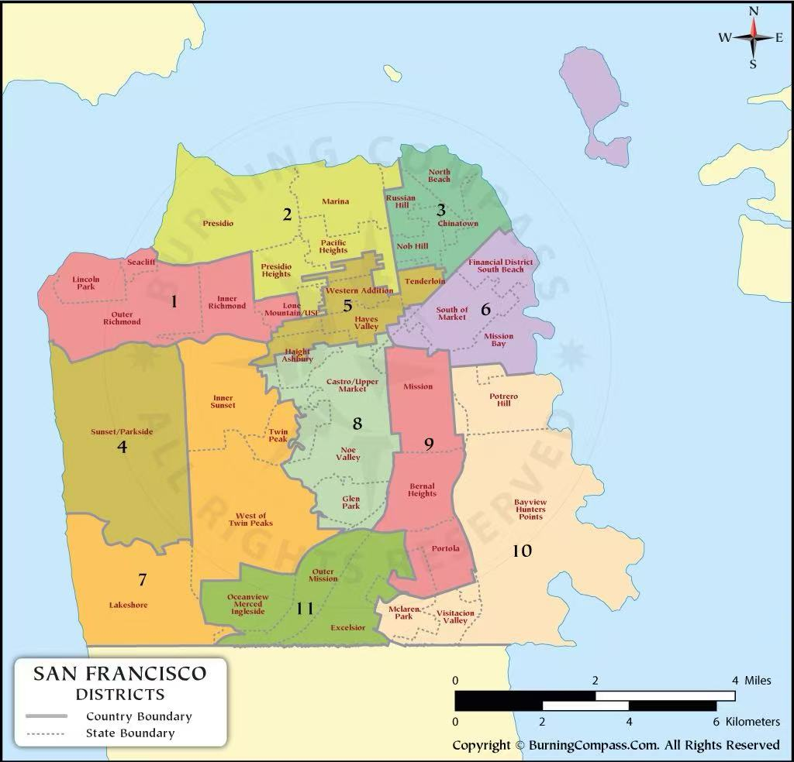

| # | Lat | Lng | Location | District | Date | Time | Stop Count | Share of Total |
|---|
Stops are not evenly distributed across San Francisco. Instead, they form several clear clusters concentrated in specific corridors, particularly in the central and southeastern parts of the city.
The map shows that areas such as Mission, Ingleside, and Bayview have noticeably higher densities of stops, while large portions of the western districts remain relatively sparse. This suggests that stop activity is closely tied to particular urban zones rather than spread uniformly.
Stop activity is highly concentrated in a small number of districts. Ingleside, Richmond, and Southern together account for a large share of all stops, each exceeding roughly 18% of the total. In contrast, several districts fall below 5%, indicating a sharp imbalance rather than a gradual distribution.
This pattern suggests that enforcement is not evenly spread across the city, but instead focused on specific areas. The drop-off after the top four districts is steep, reinforcing that a few locations dominate overall stop activity.
District map:

Stop activity follows a clear daily cycle rather than remaining constant. The chart shows a sharp increase in the morning, with a major peak around 8–10 AM, followed by a second rise in the late afternoon and early evening.
Activity drops significantly in the early morning hours (around 3–5 AM), indicating a strong relationship with commuting and daily movement patterns. The repeated peaks suggest that stops are closely tied to predictable time-based behaviors rather than random distribution.